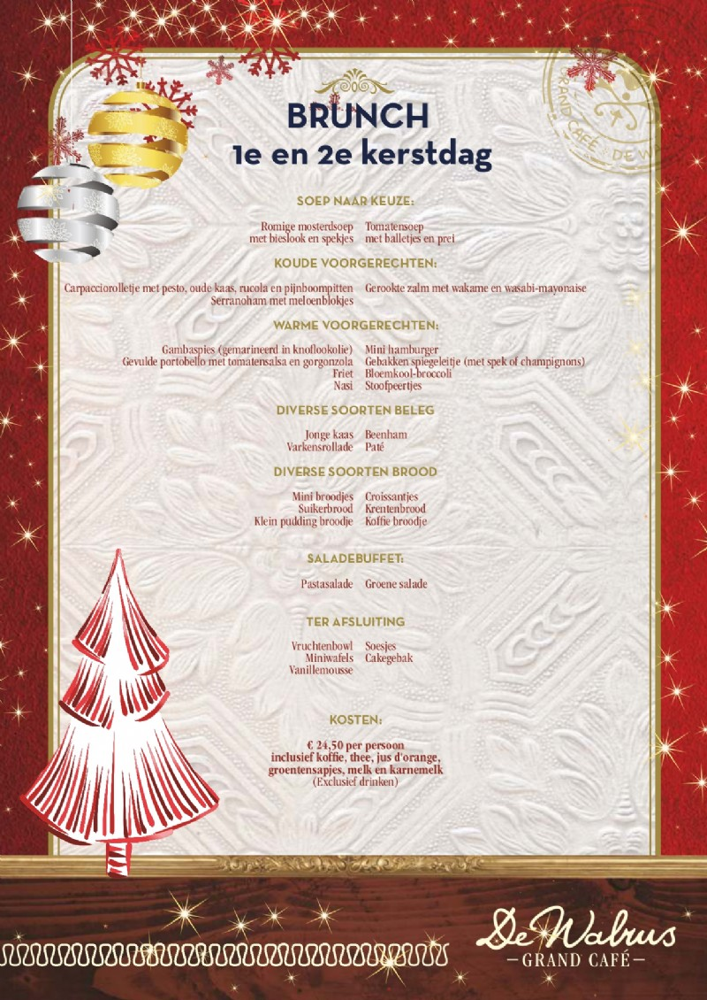

Welkom bij Grand-café de walrus!
Bioscoop arrangment
Ben je verliefd, is er iemand jarig of ben je op zoek naar een origineel cadeau? In samenwerking met de bioscopen in Leeuwarden en de bioscoop in Sneek bieden wij het bioscoop arrangement aan. Met dit arrangement geniet je eerst van een heerlijk drie-gangen diner bij De Walrus om vervolgens uit te buiken in de bioscoop. De vouchers zijn te verkrijgen in de Walrus voor € 34,50! Reserveren is niet noodzakelijk, maar vanaf 4 personen wel wenselijk. Bij de bioscoop in Sneek is het noodzakelijk om te reserveren Cine Sneek: 0515-412341 of mailen via: bioscoop@cinesneek.nl Benieuwd naar het 3-gangen menu? Bekijk 'm hier of scroll door naar beneden! De Walrus Leeuwarden Tel: 058 - 21 377 40 E-mail: info@dewalrusleeuwarden.nl De Walrus Sneek Tel: 0515 - 438 100 E-mail: info@dewalrussneek.nl BIOSCOOP ARRANGEMENT MENU Romige mosterdsoep Bieslook en spekjes Romige tomatensoep Prei en gehaktballetjes *** Schotse biefstuk Spek, ui, champignons en kalfsjus Mc Walrusburger (rosé gebakken) Kropsla, rode uienringen, spek, augurk, cheddar en McWalrussaus Varkenshaassaté Atjar tjampoer, cassave, seroendeng en satésaus Lekkerbekje Gebakken aardappelen met schil en remouladesaus Spinazie-ricottataart Tomatensalsa en rucola Salade geitenkaas Olijven, croutons, walnoten, zongedroogde tomaat, cherrytomaat, komkommer en bosvruchtendressing *** Vloeibaar chocoladetaartje Chocoladeroomijs en slagroom IJs van Margje 24 3 bollen ambachtelijk ijs met vruchtjes, aardbeiensaus en slagroom
